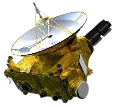

New Horizons

New Horizons is an interplanetary space probe that was launched as a part of NASA's New Frontiers program.
It was the first spacecraft to explore Pluto up close, flying by the dwarf planet and its moons on July 14, 2015. Hover over the photo!

The Kuiper Belt is a ring of icy objects around the Sun, extending just beyond the orbit of Neptune from about 30 to 55 AU.
The New Horizons Space Probe was designed to study pluto, it's moons, as well as other objects in the Kuiper Belt.
New Horizons' Discoveries
New Horizons made many discoveries regarding the planet Pluto and it's moons. Hover over the photo!

New Horizons found mountains made of water ice that may float on top of nitrogen ice.
It also discovered large chasms on Charon (one of Pluto's moons) and found that its north pole was covered with reddish material that had escaped from Pluto's atmosphere.
New Horizons Today
The New Horizons spacecraft remains healthy deep in the Kuiper Belt, and it is speeding away from the Earth and Sun at a rate of about 300 million miles per year (roughly 34,340mph).